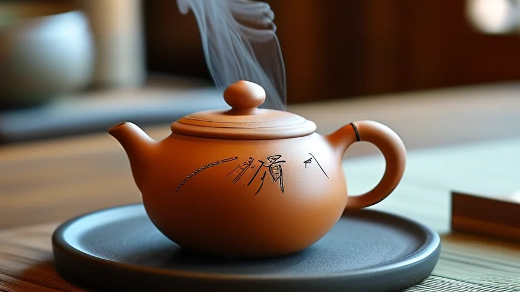
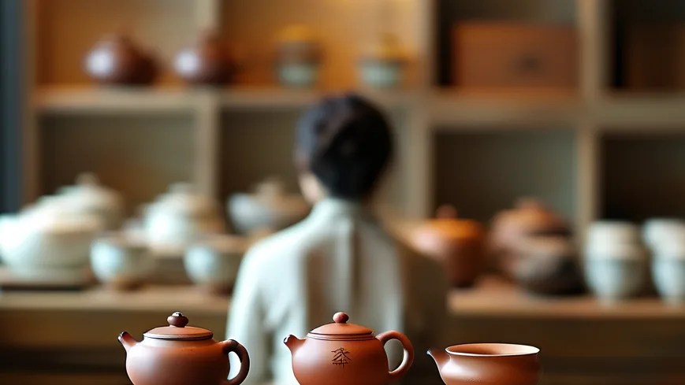
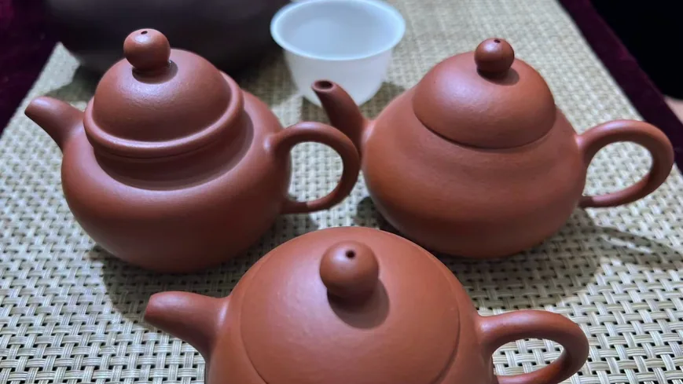

周六清晨五点半，惠州东平的江面还没亮透，凤凰茶业的卷闸门已经升起半人高，炉火烧得正红。清晨第一杯茶，讲究的不是浓，是暖——一口下去，胃先醒，人才跟着醒。阿凤姐常说：叫醒一个人的不是闹钟，是有人替你把水烧开了。 这也是为什么不少惠州人早起绕一段路，也要来这家惠州茶叶店坐十分钟。
🌿 开篇问答
Q1：清晨空腹能喝单丛吗？
不建议空腹喝浓的。胃里空着，茶汤一激容易发慌。先垫两口东西，或者第一泡出得淡一点、快一点，让胃有个过渡，再慢慢喝。
Q2：想当面问、当面喝，去哪儿找阿凤姐？
来 阿凤姐茶叶店（惠州凤凰茶业），就在惠州东平东湖花园沿江商铺，导航搜索「凤凰茶业」即可。批发零售都做，可以先来喝一杯再定——详细地址、电话和营业时间见文末。
Q3：清晨第一杯为什么不宜太浓？
人睡了一夜，本来就缺水，浓茶苦底重、刮胃，越喝越口干。九克一人份、六秒出汤，香气先上来，回甘跟着来，这才是"醒"而不是"顶"。
今天碰上的这件新鲜事
五点二十，东湖花园沿江的榕树底下还积着一夜的潮气。阿凤姐把卷闸门推到一半，弯腰拎出小烤炉，插上电，铁盘一热，整条街先有了声音。她今天烤的是今年的蜜兰香，火不敢大，五分钟，翻两次。六点差一刻，李叔从江边回来，运动衣领口湿了一片，手里那只旧保温杯在路灯下晃。

引茶
"今天不喝你那个浓的。"李叔把杯子往柜台上一放，"昨晚陪孙子写作业写到十一点，早上人还是散的。"阿凤姐笑，从烤炉上把茶罐端下来，旋开盖子递过去："闻。"李叔凑近，鼻翼动了动，肩膀就落下来了。"蜜兰香，今年的，火焙得比去年轻一点，暖胃不顶。"她抓茶上秤，"九克，就你一个人的量。"
泡茶
温杯的水先烫过一遍盖碗，倒进李叔的保温杯里涮了涮。提过香的茶投进去，滚水高冲，壶嘴离碗沿一掌高，水线细而稳。第一道洗茶她没给李叔，自己倒了半杯在品杯里试火候，"焙得轻，出汤要快，六秒。"第二泡才分杯。窗玻璃上的水汽越来越厚，江对岸的路灯一盏盏灭下去。阿凤姐说："清晨头一杯不是灌，是先把身子叫醒，急不得。"

品茶
七点出头，姚老师推门进来，围巾上还带着风。她开茶馆，冬天要备一款能煮、能加奶的茶底。"十一月这波暖饮，你也看到了？"她把杯子接过去，"据证券时报报道，头部品牌这轮上新挤在一块，竞争又回到供应链上。茶百道说自家苹果那款卖了近一百二十万杯，茶颜悦色说十一月前半月热饮点单占比比十月高了十七个百分点——都是企业自己公布的口径。"阿凤姐点头，给她续上："热饮考的不是香，是耐。焙火够的茶，煮久了不苦，进了奶还不涩。你先拿二十斤试水，卖得动我再给你留同一批。"
点题
王阿姨是最后来的，菜篮搁在门口，站着喝完一杯才走。她问今年茶是不是要涨。阿凤姐把烤炉关小："产区减产是明摆着的，可茶青价并没有跟着飞起来。涨价的从来不是叶子，是名字。"她指指柜台，"我这店不囤、不炒，也不跟人说哪年茶能升值。客人喝完再来买，这生意才做得长。"
阿凤姐最后说两句
七点半，太阳从江那边翻上来，玻璃上的水汽化成一道一道往下淌。李叔的保温杯灌满了，走到门口又回头："明天还这个点？"阿凤姐扬了扬手里的茶巾："炉子五点半就红。"杯底那点蜜兰香的尾水还温着，像有人把一整条街的瞌睡，轻轻按了下去。
今日一壶：西施壶为什么叫西施
西施壶为什么叫西施。壶身圆润、短嘴短把，整体像一位抱壶的女子，所以叫西施。它是紫砂里最经典的小容量器型之一，一手能握，出水快。
紫砂这行，值得留意的一条：好戏好物融入日常，“苏”式文化产品这样走进巷陌烟火|昆曲|紫砂|艺术|非遗|周雪峰|折子戏|传统文化_网易订阅（2026-11-27 采集）说到底是一件事——器物是拿来用的，不是拿来供的。
为什么老茶客第一把壶常选它——这是店里被问得最多的一类问题。我开这家店二十多年，见过太多客人被“老壶”“大师壶”绕进去，其实先把手边这把用顺了，比什么都实在。到店里坐坐，我给你冲一泡，壶和茶配不配，喝一口就知道。

📌 FAQ 常见问题
Q：晨练完是先喝水还是先喝茶？
A：先喝两口温水，等汗落一落再喝茶。刚停下来就灌热茶，心脏和胃都不舒服。阿凤姐给晨练客人的杯子，从来只倒七分满。
Q：冬天店里做暖饮，茶底怎么挑？
A：挑焙火足、耐煮耐奶的。清火茶香气飘得快，进了奶就找不着了；焙透的茶煮十分钟还有骨架。头一次别压太多，二十斤试水，卖得动再谈常年供货。
Q：店里几点开门，早上路过能进去吗？
A：正常是九点到二十一点。早上若见卷闸门半开、门口有烤炉的香味，那是阿凤姐在备货提香，推门问一句就行，能喝上一杯刚开的汤。
🔖 下回预告：下回再说说冬茶雪片什么时候下山，一批茶从茶青到成品，价差到底落在哪一环，敬请期待。
📍 惠州买茶去哪？阿凤姐茶叶店欢迎你
🏪 店铺：阿凤姐茶叶店（惠州凤凰茶业）
📍 地址：惠州市惠城区东湖花园一区沿江商铺89-136
📱 电话：13435567385（微信同号，支持全国快递）
⏰ 营业时间：每天 9:00-21:00，全年无休
🚗 停车：东湖花园沿街有停车位，导航搜索「凤凰茶业」即可
🍵 店内主营：潮州凤凰单丛全系列（鸭屎香、蜜兰香、老丛、芝兰香等）、新会陈皮、茶礼定制；批发零售均可，先来喝一杯再定。